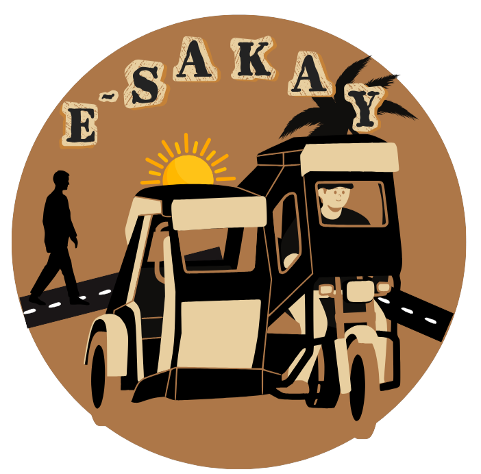

E-SAKAY

Ang logo na ito ay isang makulay na representasyon ng buhay ng mga traysikel drayber sa bayan ng Daet Camarines Norte, kung saan ang "E-SAKAY" ay nangangahulugang "Elektroniko, Serbisyo, Adhika, Kuwento, Aspekto, Yugto," naglalayong itampok ang kanilang mga kuwento sa pamamagitan ng makabagong teknolohiya. Ang mga kulay dilaw, itim, at puti ay sumisimbolo sa iba't ibang aspeto ng kanilang kabuhayan: ang dilaw sa pag-asa, ang itim sa mga hamon at kalungkutan, at ang puti sa mga pagkakataon ng kasaganahan. Sa gitna ng logo, ang simbolo ng tao, traysikel, at araw ay nagpapakita ng malapit na ugnayan sa pagitan ng mga tao at mga traysikel drayber, na nagbibigay-diin sa kanilang mahalagang papel sa pang-araw-araw na buhay at ang mga kuwentong nabubuo sa bawat sakay.
Tingnan ang KuwentoAng Kuwento
Kuwento sa Pasahero
Sa mataong kalsada ng Daet, ang mga drayber ng traysikel ay hindi lamang nakikipagbuno sa trapiko pati na rin sa iba't ibang pasahero.
Si Mang Tino ng ALATODA, isang beteranong drayber, ay napakamot ng ulo nang isang pasahero ang bumaba nang hindi nagbayad. Sanay na siya sa mga nakikisabay ngunit bigla na lang baba nang walang pakialam. "Hay, kung alam lang nila ang pagod naming maghanapbuhay," buntong-hininga niya habang naghihintay ng panibagong pasahero.
Samantala, si Mang Tad ng COMATODA, isang taong may malasakit sa pamilya, ay naharap sa isang pasaherong nagreklamo na "masyadong mahal" ang pamasahe. Kahit gusto niyang sumagot ng pabalang, pinili niyang magpaliwanag nang mahinahon at maayos. Alam niyang kailangang habaan ang pasensya, ang bawat kita niya ay para sa edukasyon ng kanyang mga anak.
Si Ramon ng SM Hypermarket Daet Barkadahan Drivers Association ay matatag sa kanyang prinsipyo. Isang pasahero ang nagkasundong magdoble ride ngunit nang makarating sa destinasyon, nagreklamo sa pamasahe. "Hindi po pwede 'yan, napagkasunduan na natin bago kayo sumakay," mariing tugon ni Ramon. Sa huli, napilitan ang pasahero na magbayad.
Sa terminal naman ng OLLLDTODA, si Kuya Ben ay isang drayber na laging kalmado kahit pa may pasaherong nag-akusa sa kanya ng "overcharging". Sa halip na makipagtalo, ito ay masusing pinag-aralan at nalaman na tama lamang ang singil batay sa opisyal na pamasahe. Napatunayan na tama ang bayad at natapos nang maayos ang reklamo.
Kuwentong Katatakotan
Sa madilim na kalsada, ang takot ay bumabalot sa bawat biyahe. Si Mang Lito, isang drayber ng MC7TODA, ay nakaranas ng matinding pangamba nang biglang may sumulpot na anino mula sa dilim. Muntik na siyang mahulog sa bangin, ngunit salamat sa kasamang anghel, nailigtas siya.
Sa kabila ng takot, patuloy siyang nagtrabaho. Ang pamamasada ang naging daan upang maitaguyod ang kanyang pamilya at mapagtapos ang mga anak sa pag-aaral. Ngunit hindi nawawala ang mga kakaibang karanasan. May pasaherong tumakbo nang hindi nagbayad, at nang kanyang balikan, nalaman niyang aswang pala ito. May isa ring insidente kung saan siya ang napagbintangan sa nawawalang wallet ng pasahero.
Sa kabilang dako, si Mang Bert, isang drayber ng CNPHTODA, ay nakaranas din ng galit ng isang pasahero. Dahil hindi niya ito hinintuan sa madilim na lugar, binato siya nito. Nagulat siya, ngunit pinili niyang magpatuloy, umaasang sana'y mas naging mahinahon ang pasahero.
Kuwentong Katatawanan
Sa maingay na kalsada ng Mabini, naghahabulan ang mga traysikel. Isang araw, sumakay kay Mang Jay ng CPTODA ang tatlong estudyante. Pagdaan sa humps, sabay-sabay silang umutot! Nagturuan at nagtawanan, habang si Mang Jay, napapailing na lang sa kalokohan.
Araw-araw, iba't ibang pasahero ang kanyang hinaharap. May hindi nagbabayad, may pasobra, at may masungit. Pero para kay Mang Jay, ang pagiging drayber ay paglilingkod. Ang bawat biyahe ay para sa pamilya.
Samantala, si Mang Tope ng CRBTODA, nakikipagsapalaran sa kalsadang bantay-sarado ng pulis. Kapag mahirap ang pasada, sinusubok ang kanyang pasensya. Ngunit may mga mababait na pasahero rin, nagbibigay ng kaunting saya. Sa kabila ng lahat, nagpapasalamat siya dahil sa pamamasada, napagtapos niya ang anak.
Mananaliksik
Mga indibidwal na nagsagawa ng masusing pag-aaral o imbestigasyon, gamit ang siyentipikong pamamaraan, upang makatuklas ng bagong kaalaman o katotohanan sa iba't ibang larangan.
Lawrenze Andrei D. Campita
Kurso: Batsilyer sa Agham ng Edukasyong Pansekundarya Medyor sa Filipino
Kapanganakan: Marso, 27, 2004
Tirahan: Purok 2, Bulhao, Labo, Camarines Norte
Contact No.: 09075362345
Email: campitalawrenze@gmail.com
Jame Claire H. Lamadrid
Kurso: Batsilyer sa Agham ng Edukasyong Pansekundarya Medyor sa Filipino
Kapanganakan: Enero 10, 2004
Tirahan: Purok 2. Batobalani Paracale Camarines Norte
Contact No.09517648589
Email: clairelamadrid1@gmail.com